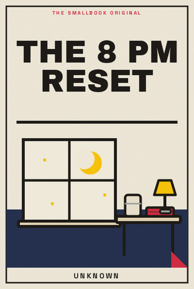

Library › Productivity
The 8 PM Reset - Summary & Key Lessons

A good tomorrow is usually prepared by a small, calm closing ritual tonight.
📖 OPEN THE FULL INTERACTIVE BREAKDOWN →🌐 Read it in Hindi, Hinglish, Gujarati, Tamil & 22 more languages, with audio.
💡 The Big Idea
A good tomorrow is usually prepared by a small, calm closing ritual tonight. The lessons below are designed to be used slowly: read one, try it in a real situation, and return with evidence rather than agreement.
🧠 The 8 Key Lessons
Lesson 1: Close the Open Loops
Chapter 1: Close the Open Loops
Mental clutter often comes from promises with no trusted home. Write them down, decide their next visible step, and your brain can stop rehearsing them. A good tomorrow is usually prepared by a small, calm closing ritual tonight. The useful question is not whether this is perfectly true in every situation, but what it helps you notice before you act. Most people skip this step because the visible task feels urgent. The book asks you to slow down long enough to identify the constraint, trade-off or relationship underneath the task. Once that is clear, a smaller and more reliable move becomes possible. Repeated over time, that move changes the system rather than merely decorating the surface of it.
📖 Example: A student keeps remembering an unfinished assignment while trying to sleep. A two-minute list with “open document at 7:30” removes the need to keep remembering it. The point is not to copy the situation exactly. Notice the sequence: make the hidden condition visible, choose the next action that respects it, and then observe what happens. That turns a memorable story into a testable practice instead of a slogan. Read the full example →
⚡ Do this: Before bed, capture every loose task and give each a next step, a date or a deliberate “not now.”
Lesson 2: Set the First Scene
Chapter 2: Set the First Scene
Morning friction is decided before morning begins. Put the first tool, page or pair of shoes where the next action will happen. A good tomorrow is usually prepared by a small, calm closing ritual tonight. The useful question is not whether this is perfectly true in every situation, but what it helps you notice before you act. Most people skip this step because the visible task feels urgent. The book asks you to slow down long enough to identify the constraint, trade-off or relationship underneath the task. Once that is clear, a smaller and more reliable move becomes possible. Repeated over time, that move changes the system rather than merely decorating the surface of it.
📖 Example: A runner puts clothes and water beside the bed, so the decision at 6 AM is no longer whether to prepare. The point is not to copy the situation exactly. Notice the sequence: make the hidden condition visible, choose the next action that respects it, and then observe what happens. That turns a memorable story into a testable practice instead of a slogan. Read the full example →
⚡ Do this: Prepare the first two minutes of tomorrow’s most important task tonight.
Lesson 3: Make a Three-Line Plan
Chapter 3: Make a Three-Line Plan
A plan needs only a direction, one important task and one kindness to your future self. Longer lists create fake urgency. A good tomorrow is usually prepared by a small, calm closing ritual tonight. The useful question is not whether this is perfectly true in every situation, but what it helps you notice before you act. Most people skip this step because the visible task feels urgent. The book asks you to slow down long enough to identify the constraint, trade-off or relationship underneath the task. Once that is clear, a smaller and more reliable move becomes possible. Repeated over time, that move changes the system rather than merely decorating the surface of it.
📖 Example: A founder writes three outcomes for the next day and declines to add ten minor tasks that would blur them. The point is not to copy the situation exactly. Notice the sequence: make the hidden condition visible, choose the next action that respects it, and then observe what happens. That turns a memorable story into a testable practice instead of a slogan. Read the full example →
⚡ Do this: Write tomorrow’s direction, one priority and one small maintenance task on a card.
Lesson 4: Choose a Stopping Time
Chapter 4: Choose a Stopping Time
Work without an ending expands into the evening and steals recovery. A deliberate stop is a boundary, not laziness. A good tomorrow is usually prepared by a small, calm closing ritual tonight. The useful question is not whether this is perfectly true in every situation, but what it helps you notice before you act. Most people skip this step because the visible task feels urgent. The book asks you to slow down long enough to identify the constraint, trade-off or relationship underneath the task. Once that is clear, a smaller and more reliable move becomes possible. Repeated over time, that move changes the system rather than merely decorating the surface of it.
📖 Example: A designer closes work at a fixed time, notes the next move, and returns fresher instead of endlessly reopening the same file. The point is not to copy the situation exactly. Notice the sequence: make the hidden condition visible, choose the next action that respects it, and then observe what happens. That turns a memorable story into a testable practice instead of a slogan. Read the full example →
⚡ Do this: Set a realistic end time for tomorrow and a five-minute shutdown alarm.
Lesson 5: Lower the Night Noise
Chapter 5: Lower the Night Noise
Late scrolling borrows attention from the next day while pretending to be rest. Replace it with a lower-stimulation transition. A good tomorrow is usually prepared by a small, calm closing ritual tonight. The useful question is not whether this is perfectly true in every situation, but what it helps you notice before you act. Most people skip this step because the visible task feels urgent. The book asks you to slow down long enough to identify the constraint, trade-off or relationship underneath the task. Once that is clear, a smaller and more reliable move becomes possible. Repeated over time, that move changes the system rather than merely decorating the surface of it.
📖 Example: A family leaves phones outside the bedroom and uses ten minutes of music or conversation instead. Sleep improves without a heroic rule. The point is not to copy the situation exactly. Notice the sequence: make the hidden condition visible, choose the next action that respects it, and then observe what happens. That turns a memorable story into a testable practice instead of a slogan. Read the full example →
⚡ Do this: Choose one screen boundary for the last 30 minutes before sleep.
Lesson 6: Name the Worry
Chapter 6: Name the Worry
Unwritten worries become enormous because they have no shape. Naming the concern and its next possible action makes it manageable. A good tomorrow is usually prepared by a small, calm closing ritual tonight. The useful question is not whether this is perfectly true in every situation, but what it helps you notice before you act. Most people skip this step because the visible task feels urgent. The book asks you to slow down long enough to identify the constraint, trade-off or relationship underneath the task. Once that is clear, a smaller and more reliable move becomes possible. Repeated over time, that move changes the system rather than merely decorating the surface of it.
📖 Example: A teenager writes “I am worried about fees” rather than carrying a vague dread, then plans one conversation with a parent. The point is not to copy the situation exactly. Notice the sequence: make the hidden condition visible, choose the next action that respects it, and then observe what happens. That turns a memorable story into a testable practice instead of a slogan. Read the full example →
⚡ Do this: Write one worry, one fact you know, and one helpful conversation or action.
Lesson 7: Let Tomorrow Be Imperfect
Chapter 7: Let Tomorrow Be Imperfect
An evening reset should reduce pressure, not become another performance. Missing it once should never become a reason to abandon it. A good tomorrow is usually prepared by a small, calm closing ritual tonight. The useful question is not whether this is perfectly true in every situation, but what it helps you notice before you act. Most people skip this step because the visible task feels urgent. The book asks you to slow down long enough to identify the constraint, trade-off or relationship underneath the task. Once that is clear, a smaller and more reliable move becomes possible. Repeated over time, that move changes the system rather than merely decorating the surface of it.
📖 Example: After a late wedding, someone does only the one-line plan and resumes the full ritual the next night. The point is not to copy the situation exactly. Notice the sequence: make the hidden condition visible, choose the next action that respects it, and then observe what happens. That turns a memorable story into a testable practice instead of a slogan. Read the full example →
⚡ Do this: Make a minimum version of your reset that takes under two minutes.
Lesson 8: Review the Pattern Weekly
Chapter 8: Review the Pattern Weekly
A daily ritual becomes wiser when it notices patterns: when energy fell, what helped, what kept repeating. A good tomorrow is usually prepared by a small, calm closing ritual tonight. The useful question is not whether this is perfectly true in every situation, but what it helps you notice before you act. Most people skip this step because the visible task feels urgent. The book asks you to slow down long enough to identify the constraint, trade-off or relationship underneath the task. Once that is clear, a smaller and more reliable move becomes possible. Repeated over time, that move changes the system rather than merely decorating the surface of it.
📖 Example: After two weeks, a learner sees that packing lunch at night consistently protects an afternoon study block. The point is not to copy the situation exactly. Notice the sequence: make the hidden condition visible, choose the next action that respects it, and then observe what happens. That turns a memorable story into a testable practice instead of a slogan. Read the full example →
⚡ Do this: Once a week, ask what one evening choice made the next day easier.
✅ 5-Step Action Plan
- Before bed, capture every loose task and give each a next step, a date or a deliberate “not now.”
- Prepare the first two minutes of tomorrow’s most important task tonight.
- Write tomorrow’s direction, one priority and one small maintenance task on a card.
- Set a realistic end time for tomorrow and a five-minute shutdown alarm.
- Choose one screen boundary for the last 30 minutes before sleep.
⚠️ When This Doesn't Work
A book can offer a useful lens, not a universal rule. Your money, health, family duties, workplace power and access to support change what is possible. Keep the principle, adapt the practice, and ask for expert help where the stakes are high.
💀 The Graveyard Proves It
💬 Best Quotes from The 8 PM Reset
- “A good tomorrow is usually prepared by a small, calm closing ritual tonight.”
- “Small, honest experiments are more useful than impressive intentions.”
- “A good idea becomes valuable only when it changes the next choice.”
Interactive version: mark lessons as read, listen in your language, share quote cards.